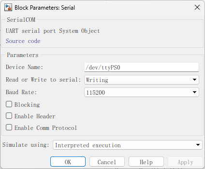
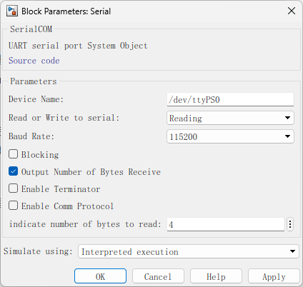
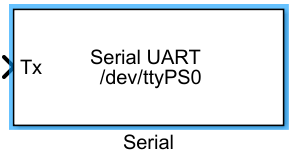
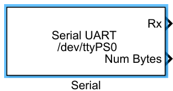

|
RflySimSDK v3.06
RflySimSDK说明文档
|
载入中...
搜索中...
未找到
|
RflySimSDK v3.06
RflySimSDK说明文档
|
| 功能 | Serial模块用于在模型与外部设备之间通过串行端口进行数据通信。该模块允许模型通过串行接口发送或接收数据，常用于与硬件设备（如传感器、微控制器或其他外设）进行实时通信。这对于需要在仿真过程中与外部硬件交换数据的应用场景非常有用。 |
|---|---|
| 参数 |   |
| 源代码 | 点击“源代码”超链接，可以打开模块的MATLAB系统对象代码（系统对象使用面向对象的方法编写，可利用MATLAB Coder将MATLAB代码转换为C代码）。参见Call C/C++ function from generated code - MATLAB coder.ceval (mathworks.com) |
| Device Name | 指定要与之通信的串行设备名称。例如，/dev/ttyS0 表示系统中的一个串行端口设备。这通常是Linux系统中串行端口的路径。 |
| Read or Write to serial | 选择串行端口的操作模式，可以是“Writing”或“Reading”。“Writing”模式将数据从Simulink写入到串行端口，“Reading”模式则是从串行端口读取数据到Simulink。 |
| Baud Rate | 设置串行通信的波特率，即每秒传输的位数。典型的波特率值是115200、9600等。这需要与连接设备的波特率一致。 |
| Blocking | 如果启用此选项，模块将等待直到发送或接收操作完成后才继续执行下一步。否则，模块将继续执行而不等待。 |
| Output Number of Bytes Receive | 在“Reading”模式下,启用此选项后，模块将输出一个表示接收到的字节数的信号。 |
| Enable Terminator | 这个选项用于在每次发送数据后附加一个终止符（如换行符），通常用于文本数据的传输。 |
| Enable Header | 启用此选项后，发送的数据包将包含一个头部信息，用于标识数据包的开始。这在某些通信协议中是必需的。 |
| Enable Comm Protocol | 如果启用此选项，模块将使用特定的通信协议来处理数据传输。这通常用于更加复杂的通信场景。 |
| indicate number of bytes to read | 在“Reading”模式下,指定要读取的字节数。如果设定为4，模块将在读取到4个字节的数据后停止读取操作。这有助于控制数据接收的数量，避免读取过多或过少的数据。 |
| Simulate using | 与ADC模块类似，这里可以选择**Interpreted Execution**或**Code Generation**。在解释执行模式下，模型将在MATLAB环境中解释执行，适合调试。在代码生成模式下，MATLAB代码将被编译为C代码并执行，适合更快的仿真和实际部署。 |
| 输入 |  在“Writing”模式下，Serial模块的主要功能是从Simulink模型中提取数据，并通过串行端口发送到指定的外部设备。 |
| 输出 |  在“Reading”模式下，Serial模块的主要功能是从指定的串行端口读取数据，并将其传递给Simulink模型。 |
| 使用示例 | ../../5.RflySimFlyCtrl/0.ApiExps/2.PSPOfficialExps/Readme.pdf |
{kind=link}
{kind=link}
{kind=link}
{kind=link}
{kind=link}